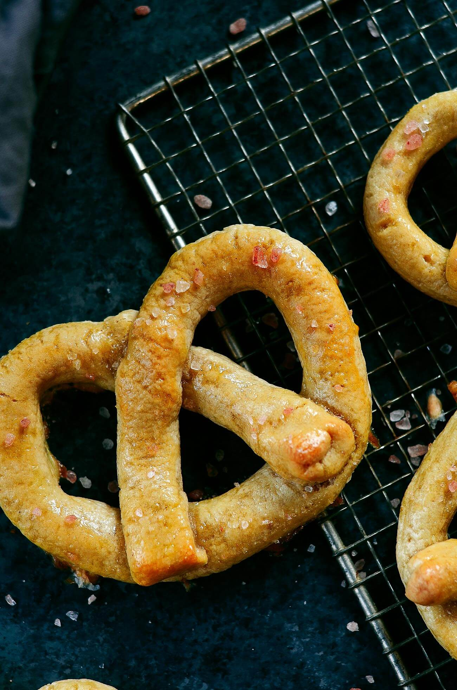

Back
Soft Pretzels
Ingredients
Pretzel Dough
- 1 cup cassava flour (note: this is different from tapioca flour. Tapioca flour has some parts of the cassava root stripped away)
- 1 cup arrowroot flour
- 4 medium eggs
- 1/4 cup palm oil shortening (I feel like regular butter would also work here -kar)
- 2 tablespoons maple syrup (make sure it isn't the corn syurp kind, will probs have to be "authentic maple syrup")
- 1 tablespoon apple cider vinegar (normal vinegar is probably also fine)
- 1 teaspoon sea salt
- 1 teaspoon baking powder
Toppings
- 1 batch egg wash To make the egg wash, just beat one egg.
- 2 tablespoons coarse salt crystals

Instructions
- Preheat oven to 400F. Line a baking sheet with parchment paper.
- Combine all the ingredients for the dough in a KitchenAid mixer (If you combine it by hand, just make sure the dough is really well mixed!).
- Bring a medium saucepan of water to a boil. Keep water at a boil over medium heat.
- Separate the dough into 10 equal parts. Roll the balls of dough into long 1" tubes. Fold the tubes of dough into pretzel shapes.
- Drop one pretzel into the boiling water and cook for 1 minute, then remove with a large handheld mesh strainer. Repeat this process until all the pretzels have been boiled.
- Set the pretzels on the parchment covered baking sheet.
- Brush the pretzels with egg wash and sprinkle with coarse salt crystals.
- Bake on 400F for 20-25 minutes until golden brown.
Source